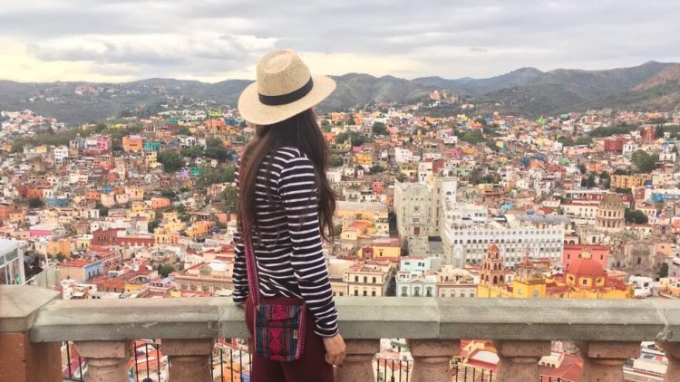

What is the ideal photographic equipment and equipment to go on a trip?
Along with the backpack, the camera has always been another important item for the traveler, at least before the smartphone, you can now have a beastly quality in a small design that allows you to put it in any pocket. I hope this text entertains you or helps you a little with your doubts.

Photo storage, which one is better?

How many photos do you plan to take? 100, 500, 3000? It depends on the camera you carry and the resolution you have (the more megapixels the larger the file size), if you shoot in JPG or RAW, or if you record video with your camera, the time will come when your data card , however large it may be, it will end up running out of space. What to do then? Well, let's do it with this couple of interesting options that I am going to show you and an extra option that I strongly advise you to keep in mind.
- Hard Drives with Card Reader
- External Hard Drive
- Amazon Drive
- Google Photos
Finally! You can also make your own blog and save your photos there.
.jpg) Backpacking Adventures
Backpacking Adventures